openturns.MarginalTransformationEvaluation¶
-
class
MarginalTransformationEvaluation(*args)¶ Marginal transformation evaluation.
- Available constructors:
MarginalTransformationEvaluation(distCol)
MarginalTransformationEvaluation(distCol, direction, standardMarginal)
MarginalTransformationEvaluation(distCol, outputDistCol)
- Parameters
- distCol
DistributionCollection A collection of distributions.
- directioninteger
Flag for the direction of the transformation, either integer or MarginalTransformationEvaluation.FROM (associated to the integer 0) or MarginalTransformationEvaluation.TO (associated to the integer 1). Default is 0.
- standardMarginal
Distribution Target distribution marginal Default is Uniform(0, 1)
- outputDistCol
DistributionCollection A collection of distributions.
- distCol
Notes
This class contains a
Functionwhich can be evaluated in one point but which proposes no gradient nor hessian implementation.In the two first usage, if
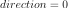
, the created operator transforms aPointinto its rank according to the marginal distributions described in distCol. Let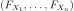
be the CDF of the distributions contained in distCol, then the created operator works as follows:If
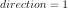
, the created operator works in the opposite direction: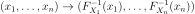
In that case, it requires that all the values
 be in
be in ![[0, 1]](../../_images/math/3f0bfb3cebd57875845d47381e6b7cd2c8bde788.svg) .
.In the third usage, the created operator transforms a
Pointinto the following one, where outputDistCol contains the distributions: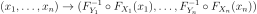
Examples
>>> import openturns as ot >>> distCol = [ot.Normal(), ot.LogNormal()] >>> margTransEval = ot.MarginalTransformationEvaluation(distCol, 0) >>> print(margTransEval([1, 3])) [0.841345,0.864031] >>> margTransEvalInverse = ot.MarginalTransformationEvaluation(distCol, 1) >>> print(margTransEvalInverse([0.84, 0.86])) [0.994458,2.94562] >>> outputDistCol = [ot.WeibullMin(), ot.Exponential()] >>> margTransEvalComposed = ot.MarginalTransformationEvaluation(distCol, outputDistCol) >>> print(margTransEvalComposed([1, 3])) [1.84102,1.99533]
Methods
__call__(self, \*args)Call self as a function.
draw(self, \*args)Draw the output of function as a
Graph.getCallsNumber(self)Accessor to the number of times the function has been called.
getClassName(self)Accessor to the object’s name.
getDescription(self)Accessor to the description of the inputs and outputs.
getExpressions(self)Accessor to the numerical math function.
getId(self)Accessor to the object’s id.
getInputDescription(self)Accessor to the description of the inputs.
getInputDimension(self)Accessor to the number of the inputs.
Accessor to the input distribution collection.
getMarginal(self, \*args)Accessor to marginal.
getName(self)Accessor to the object’s name.
getOutputDescription(self)Accessor to the description of the outputs.
getOutputDimension(self)Accessor to the number of the outputs.
Accessor to the output distribution collection.
getParameter(self)Accessor to the parameter values.
getParameterDescription(self)Accessor to the parameter description.
getParameterDimension(self)Accessor to the dimension of the parameter.
getShadowedId(self)Accessor to the object’s shadowed id.
getSimplifications(self)Try to simplify the transformations if it is possible.
getVisibility(self)Accessor to the object’s visibility state.
hasName(self)Test if the object is named.
hasVisibleName(self)Test if the object has a distinguishable name.
isActualImplementation(self)Accessor to the validity flag.
isLinear(self)Accessor to the linearity of the evaluation.
isLinearlyDependent(self, index)Accessor to the linearity of the evaluation with regard to a specific variable.
parameterGradient(self, inP)Gradient against the parameters.
setDescription(self, description)Accessor to the description of the inputs and outputs.
setInputDescription(self, inputDescription)Accessor to the description of the inputs.
setInputDistributionCollection(self, …)Accessor to the input distribution collection.
setName(self, name)Accessor to the object’s name.
setOutputDescription(self, outputDescription)Accessor to the description of the outputs.
setOutputDistributionCollection(self, …)Accessor to the output distribution collection.
setParameter(self, parameter)Accessor to the parameter values.
setParameterDescription(self, description)Accessor to the parameter description.
setShadowedId(self, id)Accessor to the object’s shadowed id.
setVisibility(self, visible)Accessor to the object’s visibility state.
-
__init__(self, \*args)¶ Initialize self. See help(type(self)) for accurate signature.
Methods
__init__(self, \*args)Initialize self.
draw(self, \*args)Draw the output of function as a
Graph.getCallsNumber(self)Accessor to the number of times the function has been called.
getClassName(self)Accessor to the object’s name.
getDescription(self)Accessor to the description of the inputs and outputs.
getExpressions(self)Accessor to the numerical math function.
getId(self)Accessor to the object’s id.
getInputDescription(self)Accessor to the description of the inputs.
getInputDimension(self)Accessor to the number of the inputs.
Accessor to the input distribution collection.
getMarginal(self, \*args)Accessor to marginal.
getName(self)Accessor to the object’s name.
getOutputDescription(self)Accessor to the description of the outputs.
getOutputDimension(self)Accessor to the number of the outputs.
Accessor to the output distribution collection.
getParameter(self)Accessor to the parameter values.
getParameterDescription(self)Accessor to the parameter description.
getParameterDimension(self)Accessor to the dimension of the parameter.
getShadowedId(self)Accessor to the object’s shadowed id.
getSimplifications(self)Try to simplify the transformations if it is possible.
getVisibility(self)Accessor to the object’s visibility state.
hasName(self)Test if the object is named.
hasVisibleName(self)Test if the object has a distinguishable name.
isActualImplementation(self)Accessor to the validity flag.
isLinear(self)Accessor to the linearity of the evaluation.
isLinearlyDependent(self, index)Accessor to the linearity of the evaluation with regard to a specific variable.
parameterGradient(self, inP)Gradient against the parameters.
setDescription(self, description)Accessor to the description of the inputs and outputs.
setInputDescription(self, inputDescription)Accessor to the description of the inputs.
setInputDistributionCollection(self, …)Accessor to the input distribution collection.
setName(self, name)Accessor to the object’s name.
setOutputDescription(self, outputDescription)Accessor to the description of the outputs.
setOutputDistributionCollection(self, …)Accessor to the output distribution collection.
setParameter(self, parameter)Accessor to the parameter values.
setParameterDescription(self, description)Accessor to the parameter description.
setShadowedId(self, id)Accessor to the object’s shadowed id.
setVisibility(self, visible)Accessor to the object’s visibility state.
Attributes
FROMTOthisownThe membership flag
-
draw(self, \*args)¶ Draw the output of function as a
Graph.- Available usages:
draw(inputMarg, outputMarg, CP, xiMin, xiMax, ptNb)
draw(firstInputMarg, secondInputMarg, outputMarg, CP, xiMin_xjMin, xiMax_xjMax, ptNbs)
draw(xiMin, xiMax, ptNb)
draw(xiMin_xjMin, xiMax_xjMax, ptNbs)
- Parameters
- outputMarg, inputMargint,

outputMarg is the index of the marginal to draw as a function of the marginal with index inputMarg.
- firstInputMarg, secondInputMargint,
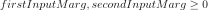
In the 2D case, the marginal outputMarg is drawn as a function of the two marginals with indexes firstInputMarg and secondInputMarg.
- CPsequence of float
Central point.
- xiMin, xiMaxfloat
Define the interval where the curve is plotted.
- xiMin_xjMin, xiMax_xjMaxsequence of float of dimension 2.
In the 2D case, define the intervals where the curves are plotted.
- ptNbint
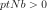
or list of ints of dimension 2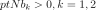
The number of points to draw the curves.
- outputMarg, inputMargint,
Notes
We note where
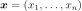
and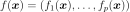
, with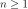
and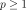
.In the first usage:
Draws graph of the given 1D outputMarg marginal
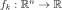
as a function of the given 1D inputMarg marginal with respect to the variation of in the interval
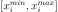
, when all the other components of are fixed to the corresponding ones of the central point CP.
Then it draws the graph:
are fixed to the corresponding ones of the central point CP.
Then it draws the graph:
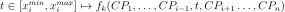
.In the second usage:
Draws the iso-curves of the given outputMarg marginal
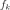
as a function of the given 2D firstInputMarg and secondInputMarg marginals with respect to the variation of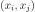
in the interval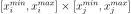
, when all the other components of are fixed to the corresponding ones of the
central point CP. Then it draws the graph:
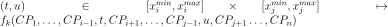
.In the third usage:
The same as the first usage but only for function
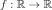
.In the fourth usage:
The same as the second usage but only for function
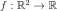
.Examples
>>> import openturns as ot >>> from openturns.viewer import View >>> f = ot.SymbolicFunction(['x'], ['sin(2*pi_*x)*exp(-x^2/2)']) >>> graph = f.draw(-1.2, 1.2, 100) >>> View(graph).show()
-
getCallsNumber(self)¶ Accessor to the number of times the function has been called.
- Returns
- calls_numberint
Integer that counts the number of times the function has been called since its creation.
-
getClassName(self)¶ Accessor to the object’s name.
- Returns
- class_namestr
The object class name (object.__class__.__name__).
-
getDescription(self)¶ Accessor to the description of the inputs and outputs.
- Returns
- description
Description Description of the inputs and the outputs.
- description
Examples
>>> import openturns as ot >>> f = ot.SymbolicFunction(['x1', 'x2'], ... ['2 * x1^2 + x1 + 8 * x2 + 4 * cos(x1) * x2 + 6']) >>> print(f.getDescription()) [x1,x2,y0]
-
getExpressions(self)¶ Accessor to the numerical math function.
- Returns
- listFunction
FunctionCollection The collection of numerical math functions if the analytical expressions exist.
- listFunction
-
getId(self)¶ Accessor to the object’s id.
- Returns
- idint
Internal unique identifier.
-
getInputDescription(self)¶ Accessor to the description of the inputs.
- Returns
- description
Description Description of the inputs.
- description
Examples
>>> import openturns as ot >>> f = ot.SymbolicFunction(['x1', 'x2'], ... ['2 * x1^2 + x1 + 8 * x2 + 4 * cos(x1) * x2 + 6']) >>> print(f.getInputDescription()) [x1,x2]
-
getInputDimension(self)¶ Accessor to the number of the inputs.
- Returns
- number_inputsint
Number of inputs.
Examples
>>> import openturns as ot >>> f = ot.SymbolicFunction(['x1', 'x2'], ... ['2 * x1^2 + x1 + 8 * x2 + 4 * cos(x1) * x2 + 6']) >>> print(f.getInputDimension()) 2
-
getInputDistributionCollection(self)¶ Accessor to the input distribution collection.
- Returns
- inputDistCol
DistributionCollection The input distribution collection.
- inputDistCol
-
getMarginal(self, \*args)¶ Accessor to marginal.
- Parameters
- indicesint or list of ints
Set of indices for which the marginal is extracted.
- Returns
- marginal
Function Function corresponding to either
 or
or
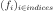
, with and
and 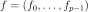
.
- marginal
-
getName(self)¶ Accessor to the object’s name.
- Returns
- namestr
The name of the object.
-
getOutputDescription(self)¶ Accessor to the description of the outputs.
- Returns
- description
Description Description of the outputs.
- description
Examples
>>> import openturns as ot >>> f = ot.SymbolicFunction(['x1', 'x2'], ... ['2 * x1^2 + x1 + 8 * x2 + 4 * cos(x1) * x2 + 6']) >>> print(f.getOutputDescription()) [y0]
-
getOutputDimension(self)¶ Accessor to the number of the outputs.
- Returns
- number_outputsint
Number of outputs.
Examples
>>> import openturns as ot >>> f = ot.SymbolicFunction(['x1', 'x2'], ... ['2 * x1^2 + x1 + 8 * x2 + 4 * cos(x1) * x2 + 6']) >>> print(f.getOutputDimension()) 1
-
getOutputDistributionCollection(self)¶ Accessor to the output distribution collection.
- Returns
- outputDistCol
DistributionCollection The output distribution collection.
- outputDistCol
-
getParameterDescription(self)¶ Accessor to the parameter description.
- Returns
- parameter
Description The parameter description.
- parameter
-
getParameterDimension(self)¶ Accessor to the dimension of the parameter.
- Returns
- parameter_dimensionint
Dimension of the parameter.
-
getShadowedId(self)¶ Accessor to the object’s shadowed id.
- Returns
- idint
Internal unique identifier.
-
getSimplifications(self)¶ Try to simplify the transformations if it is possible.
-
getVisibility(self)¶ Accessor to the object’s visibility state.
- Returns
- visiblebool
Visibility flag.
-
hasName(self)¶ Test if the object is named.
- Returns
- hasNamebool
True if the name is not empty.
-
hasVisibleName(self)¶ Test if the object has a distinguishable name.
- Returns
- hasVisibleNamebool
True if the name is not empty and not the default one.
-
isActualImplementation(self)¶ Accessor to the validity flag.
- Returns
- is_implbool
Whether the implementation is valid.
-
isLinear(self)¶ Accessor to the linearity of the evaluation.
- Returns
- linearbool
True if the evaluation is linear, False otherwise.
-
isLinearlyDependent(self, index)¶ Accessor to the linearity of the evaluation with regard to a specific variable.
- Parameters
- indexint
The index of the variable with regard to which linearity is evaluated.
- Returns
- linearbool
True if the evaluation is linearly dependent on the specified variable, False otherwise.
-
parameterGradient(self, inP)¶ Gradient against the parameters.
- Parameters
- xsequence of float
Input point
- Returns
- parameter_gradient
Matrix The parameters gradient computed at x.
- parameter_gradient
-
setDescription(self, description)¶ Accessor to the description of the inputs and outputs.
- Parameters
- descriptionsequence of str
Description of the inputs and the outputs.
Examples
>>> import openturns as ot >>> f = ot.SymbolicFunction(['x1', 'x2'], ... ['2 * x1^2 + x1 + 8 * x2 + 4 * cos(x1) * x2 + 6']) >>> print(f.getDescription()) [x1,x2,y0] >>> f.setDescription(['a','b','y']) >>> print(f.getDescription()) [a,b,y]
-
setInputDescription(self, inputDescription)¶ Accessor to the description of the inputs.
- Returns
- description
Description Description of the inputs.
- description
-
setInputDistributionCollection(self, inputDistributionCollection)¶ Accessor to the input distribution collection.
- Parameters
- inputDistCol
DistributionCollection The input distribution collection.
- inputDistCol
-
setName(self, name)¶ Accessor to the object’s name.
- Parameters
- namestr
The name of the object.
-
setOutputDescription(self, outputDescription)¶ Accessor to the description of the outputs.
- Returns
- description
Description Description of the outputs.
- description
-
setOutputDistributionCollection(self, outputDistributionCollection)¶ Accessor to the output distribution collection.
- Parameters
- outputDistCol
DistributionCollection The output distribution collection.
- outputDistCol
-
setParameter(self, parameter)¶ Accessor to the parameter values.
- Parameters
- parametersequence of float
The parameter values.
-
setParameterDescription(self, description)¶ Accessor to the parameter description.
- Parameters
- parameter
Description The parameter description.
- parameter
-
setShadowedId(self, id)¶ Accessor to the object’s shadowed id.
- Parameters
- idint
Internal unique identifier.
-
setVisibility(self, visible)¶ Accessor to the object’s visibility state.
- Parameters
- visiblebool
Visibility flag.